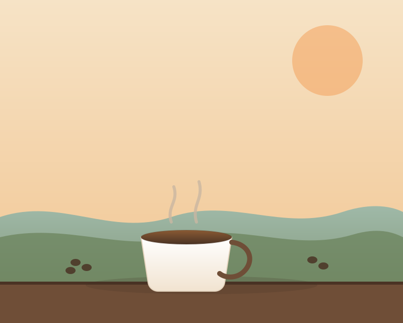

Coffee Roasted Steps From the Water
Riverside Coffee Co. is a small-batch roastery and café on the banks of the Willow River in Ashford Falls. Every bag we sell is roasted in-house, in batches small enough that our roaster can taste each one before it reaches your cup. Stop in for a slow morning, a to-go pour-over, or a bag of beans to bring the river home with you.

Why Folks Linger Here
Three things guests mention most, from the regulars who bring their own mugs to the hikers who wander down from the river trail.
Roasted in Small Batches
We roast twice a week on a refurbished 1974 drum roaster, in batches of twelve pounds or less, so nothing sits on a shelf going stale.
Riverside Patio Seating
Our back patio sits right against the Willow River. Bring a book, a laptop, or a dog — the patio welcomes all three.
Baked Fresh Each Morning
Scones, bagels, and galettes arrive warm from Ashford Falls Bakehouse two blocks over, usually before 7am.
Ready for a Cup?
Take a look at what's on the menu today, from single-origin pour-overs to our house cold brew.